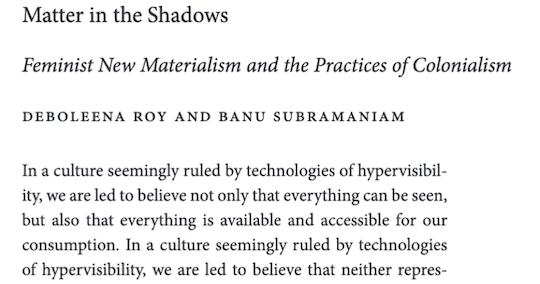
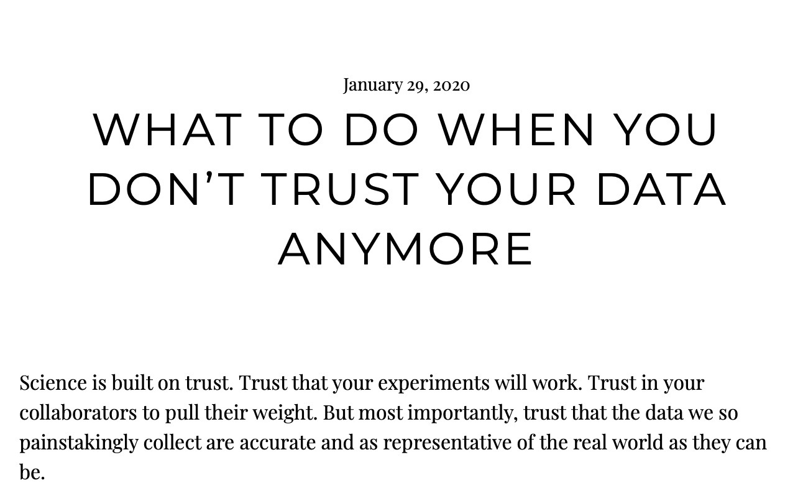

[6] We discussed colonialism and the relationships between humans and the rest of the living world in the context of "We're Tigers", an art piece and commentary by Ho Tzu Nyen from the book Art in the Anthropocene.

Archives
Code Repositories
Regression modeling of soapberry bug flight dispersal.
Coding projects as well as R and Python coding lessons for undergraduates.
Codifies all written information we find notable from our scientific and historical readings.
Contains all flight mill code for data processing, including ongoing updates such as using parallel processing.
Lab Meetings
December 2021

November 2021

[29] We discussed Indigenous Science and the limitations of current academic structures through the lens of "Mishkos Kenomagwen: The Teachings of Grass", a chapter from Braiding Sweetgrass by Robin Wall Kimmerer.
[17] Ana Silberg updates the lab on progress on her senior thesis on insect eye morphology from her study abroad in Paris!
June 2021
[25] The DEI Committee for the Ecology and Evolution Department launched its website! This website serves to increase awareness of DEI-related issues in our department and the broader community. All feedback is welcomed and we encourage you to peruse our lovely staff.
February 2021
[15] We submitted a proposal to the call offered by the American Naturalist. We are researching the history of statistical practices in the ecological sciences in the past century.
January 2021
[21] We discussed safety risks and then made a safety toolkit for the lab after reading "Safe fieldwork strategies for at-risk individuals, their supervisors and institutions" by Amelia-Juliette Claire Demery and Monique Avery Pipkin. Our safety toolkit includes 2 safety resource maps and a Cenzer Lab ID Sticker design made by Ana Silberg.
November 2020

[9] We discussed the history and modern day conducts of intersectional, feminist science after reading "Matter in the Shadows: Feminist New Materialism and the Practices of Colonialism" by Deboleena Roy and Banu Subramaniam.
October 2020

[20] We watched video speaker presentations held on Humanities Day, which was hosted by the University of Chicago. Specifically, we watched "Animals: Expanding the Humanities" by Martha C. Nussbaum.
July 2020

[27] We read Chapter 1 of Objectivity titled "Epistemologies of the Eye" by Lorraine Daston and Peter Galison.

[23] We read Chapter 1 of All Animals Are Equal by Peter Singer.
[13] We read Chapter 2 of Can Ethics Provide Answers? by James Rachels.
June 2020

[3] We read a social science study titled "Visibly Invisible: The Burden of Race and Gender for Female Students of Color Striving for an Academic Career in the Sciences" by Deirdre M. Bowen.
May 2020

[8] We watched a short video documentary titled "Recyling is Like a Band-Aid on Gangrene" and produced by The Atlantic. We also read Chapter 1 of Social Statistics in Use by Philip M. Hauser.

[5] We read the Introduction to The Disability Studies Reader by Lennard J. Davis.
April 2020

[14] We read about a spider biologist, Jonathan Pruitt, who has charges of data fraud against him. We read about the discovery of this data fraud through his collatorator's lab post, 'What To Do When you Don't Trust Your Data Anymore'.